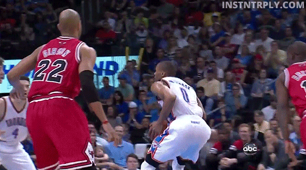
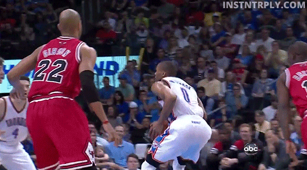

Russell Westbrook is an professional basketball player for the Oklahoma City Thunder. He is a five-time NBA All-Star and a two-time NBA All-Star Game Most Valuable Player, winning consecutive awards in 2015 and 2016. He is also a four-time All-NBA Second Team member.Westbrook played college basketball for the UCLA Bruins and earned third-team all-conference honors in the Pac-10. He was selected with the fourth overall pick in the 2008 NBA draft by the Seattle SuperSonics, which then relocated to Oklahoma City. Westbrook has represented the United States national team twice in the FIBA tournament, winning gold medals in the 2010 FIBA World Championship and the 2012 Olympics..
In the playoffs, Westbrook helped guide the Thunder past the Dallas Mavericks in the first round, and then the San Antonio Spurs in the second round. The Thunder subsequently advanced to the Western Conference Finals for the first time since 2012. In the Conference Finals, they faced the defending champion Golden State Warriors, and took home court advantage after stealing Game 1 of the series. With the series tied at 1–1 after Game 2, the Thunder returned home and took a 3–1 advantage with two home wins. In Game 4, Westbrook recorded his fifth career playoff triple-double with 36 points, 11 rebounds and 11 assists in a 118–94 win. Althoughgoing up 3–1 in the series, the Thunder were defeated 4–3 by the Warriors being elimated out of the playoffs.
 
